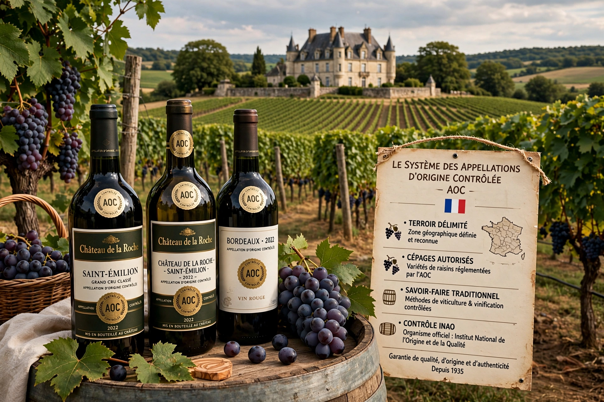

The appellation d'origine contrôlée (AOC; French pronunciation roughly apelasjɔ̃ dɔʁiʒin kɔ̃tʁole, 'controlled designation of origin') is the French certification granted to certain French geographical indications for wines, cheeses, butters, and other agricultural products, administered by the Institut national de l'origine et de la qualité (INAO).

| Country | France |
|---|---|
| Administered by | INAO |
| Established | 1935 (wine law) |
AOC products must be produced in a delimited area, from specified grape varieties or breeds, using prescribed methods, yields and alcohol levels, expressing terroir. It is the basis for the wider European system of geographical indications and protected designations of origin (PDO).
Origins lie in early 20th-century fraud laws (1905, 1919) and the work of Baron Pierre Le Roy in Châteauneuf-du-Pape. The AOC system was formalised in 1935-1936 with the creation of the predecessor of INAO.
Famous AOCs include Bordeaux, Burgundy, Champagne, Alsace and the Loire and Rhône valleys. Rules govern grape varieties, planting density, pruning, harvest yields and winemaking.
Cheeses such as Roquefort (the earliest AOC, 1925), Comté and Camembert de Normandie, as well as lentils, walnuts, olive oils and spirits such as Cognac and Calvados, carry AOC / AOP status.